A voltmeter that tells you — automatically — whether 0 V means “connected” or “open lead.” Without ever switching out of voltmeter mode.
Same probes, same workflow. The instant your reading drops near zero, it runs a continuous continuity check behind the protected inputs and tells you what that zero actually means.
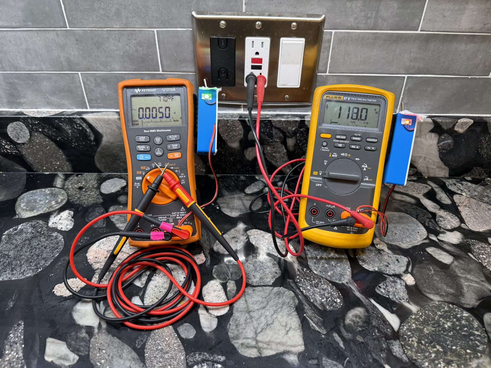
You set your meter to DC Volts, probe two points, and it settles to 0.0000 V. Is that true zero — or are you simply not connected: a floating probe, a clip that fell off, or a measurement across an isolation barrier?
| What's really happening | A normal meter says |
|---|---|
| Probes on the same net (truly connected) | 0 V |
| Probe floating / not contacting anything | 0 V |
Wasted troubleshooting time chasing a “dead” circuit that was never really probed.
You trust a “0 V” that is really a floating probe — and reach into a circuit that is actually live.
The ohms-mode dance: power down → switch to Ω → read → switch back → power up. Slow, repetitive, and easy to leave in the wrong mode.
No mode switch. No exposed ohmmeter. No guessing what “0 V” means. It has to clear a short list of hard requirements:
Survives ±1 kV Doesn't disturb the reading No perceptible delay No relays Compact & low power
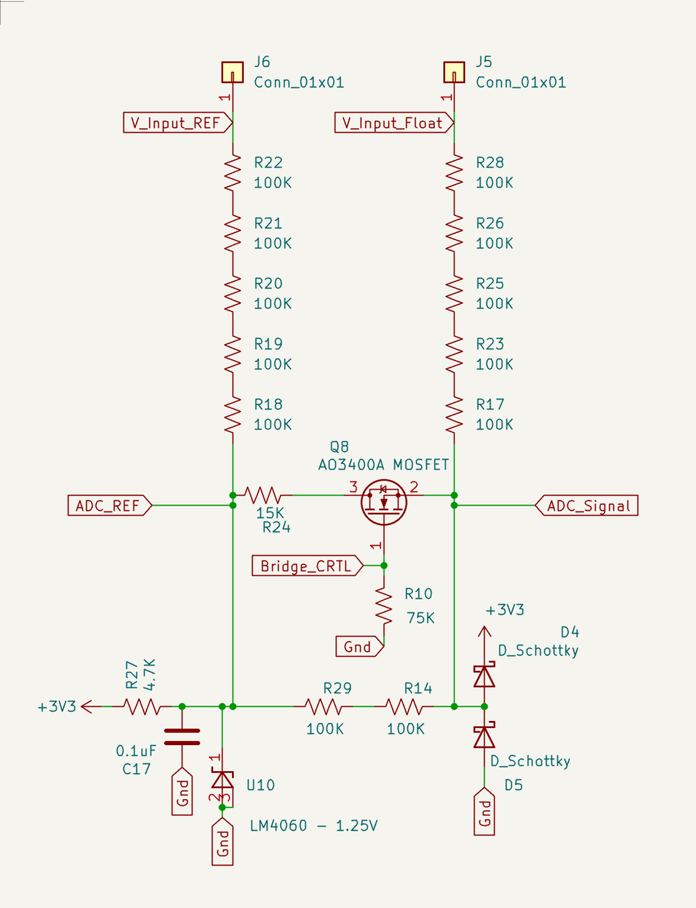
A MOSFET (Q8) sits in series with the sense leg of a biased voltage divider (1.25–2.5 V). Two ADC taps straddle a bridge resistor — one tracks the bias, the other tracks the input.
Series resistors form the divider and limit current; Schottky diodes clamp the varying node once the bridge is broken; a small resistor pair sets the probe-side amplitude (smaller = less ghost voltage).
The decay rate is set by (probe impedance × node capacitance). Higher impedance → slower decay. Read direction and rate, not an exact voltage:
| Probes (bridge broken) | Differential decay | Verdict |
|---|---|---|
| Closed / low-Z | Fast decay | Leads Closed |
| Open / floating | Slow decay | Open Leads |
| High-Z / in-between | Intermediate decay | Maps to circuit impedance |
This is what the ADC actually samples on the standalone build (an ADS1015). Toggle the bridge and the post-toggle decay gets slower the higher the probe impedance — even a coarse 17-sample capture orders every decade from 10 kΩ to 200 MΩ (open) without overlap. A faster ADC only sharpens the separation.
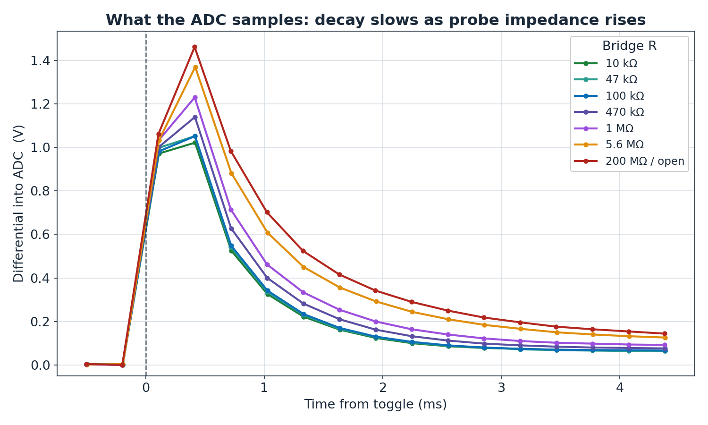
A fair question for anything that injects a signal: could it harm what you're probing? Measured front-end data says no. The voltage at the probes only rises toward the reference as the leads open (it can never exceed the reference), and the current is worst near a short — about 6 µA — collapsing to single-digit nano-amps as impedance rises, exactly where a sensitive part would care.
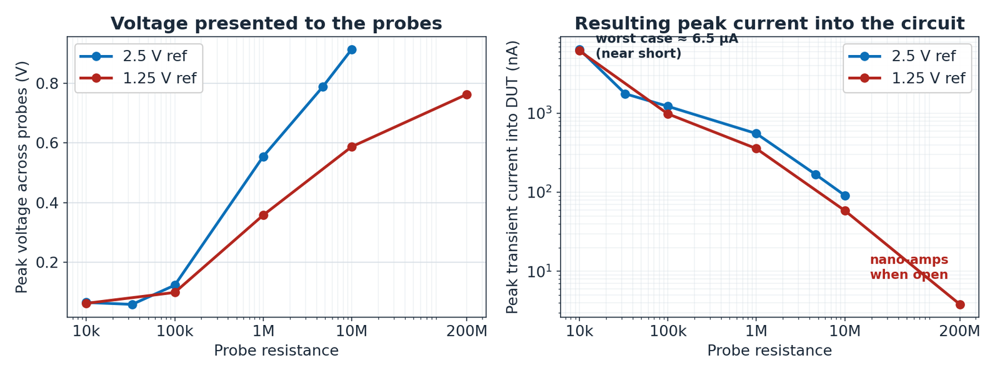
Peaks ~0.6–0.9 V and can never exceed the reference.
Near a short — dropping to nano-amps when impedance is high.
~1.0 V at 1.25 V ref, ~1.6 V at 2.5 V ref, independent of probe R.
The exact same MOSFET-bridge trick is tuned two ways. The standalone build optimizes for information — a 2.5 V reference gives a big swing so the firmware can resolve the rich “in-between” states. The parallel build optimizes for invisibility — clip it across any meter you already own and it adds open-lead detection while injecting a signal small enough not to corrupt the host reading.
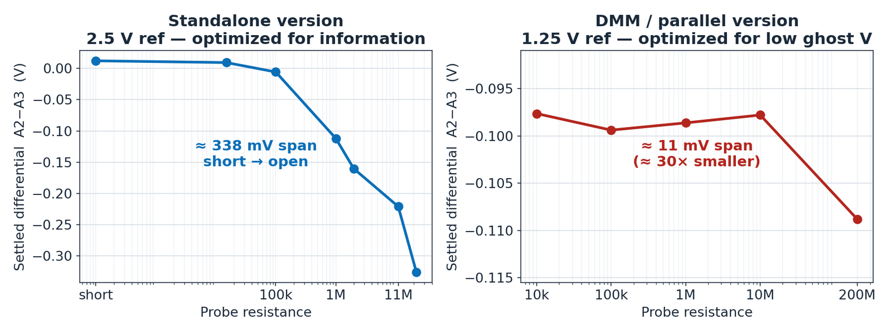
| Standalone version | DMM / parallel version | |
|---|---|---|
| Purpose | Standalone voltmeter that detects closed leads | Ternary Open / Closed / Voltage, minimal ghost V, compact |
| ADC | ADS1015 on an isolated rail | Internal MCU ADC |
| Voltage reference | 2.5 V (LM4040) | 1.25 V (LM4060) |
| Permanent sense-divider | 1 MΩ | 0.2 MΩ |
| Ghost voltage on host DMM | −170 mV | −5 mV DC (~80 mV AC) |
| Signal differentiation (10 M → short) | ~340 mV | ~10 mV |
| Power draw | — | 11 mA off battery |
These aren't breadboard toys. The standalone build runs on an ADS1015 / ADS1115; the minimalist parallel build has been validated on a Renesas RA4M1, an RP2040 (XIAO), and a SAMD21 (QT Py). Every ADC + MCU combination tried functions as expected.
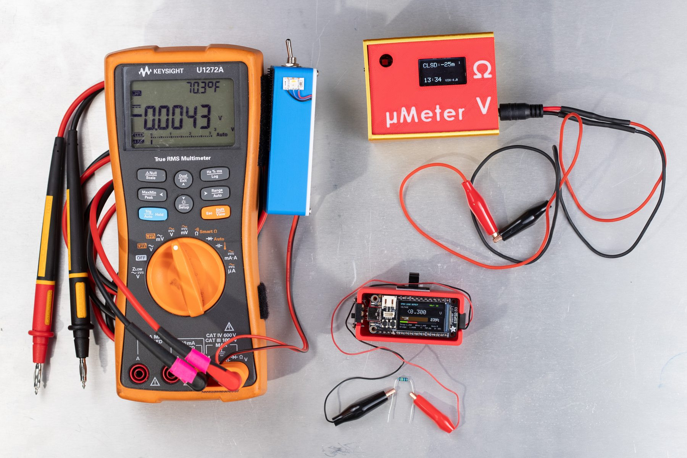
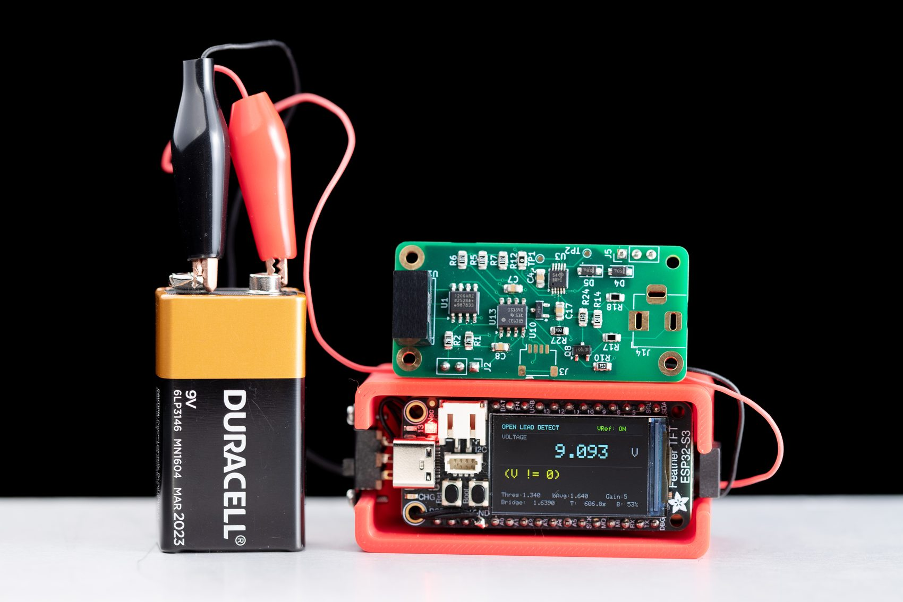
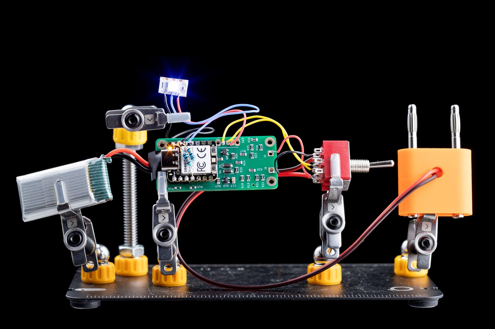
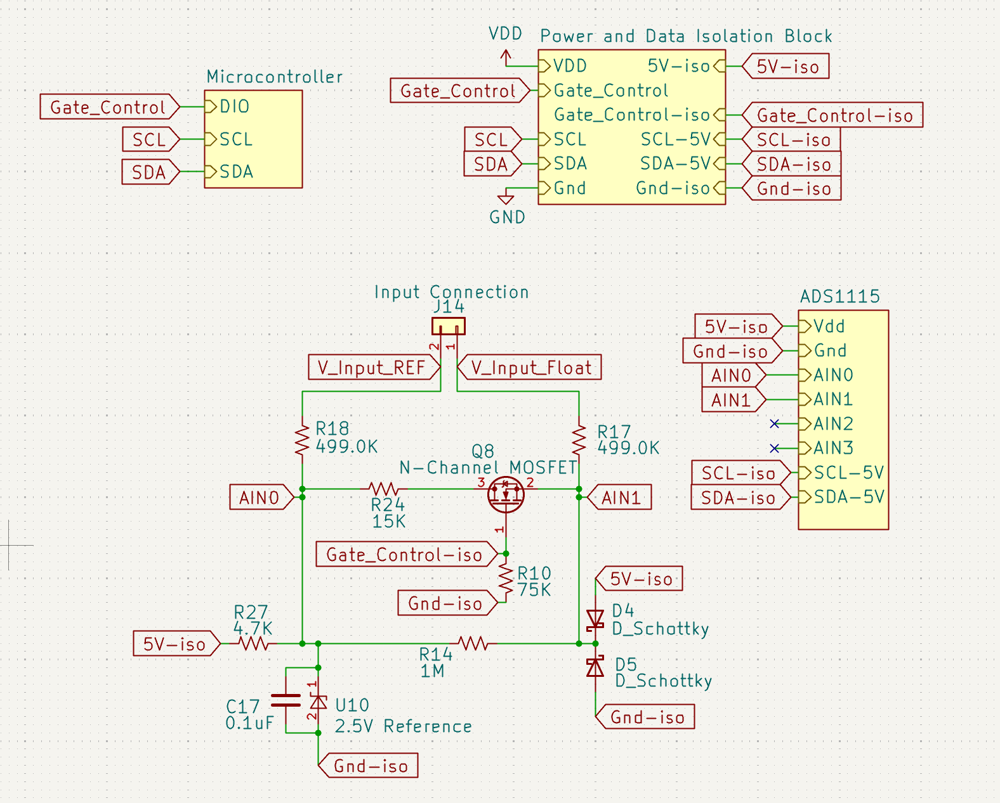
Detection keeps working from 0 V all the way to ±1 kV, because it lives behind the meter's protected voltmeter inputs — nothing fragile is ever exposed. Here it is still indicating on a live 120 VAC outlet and with −1 kV applied from a megohmmeter.
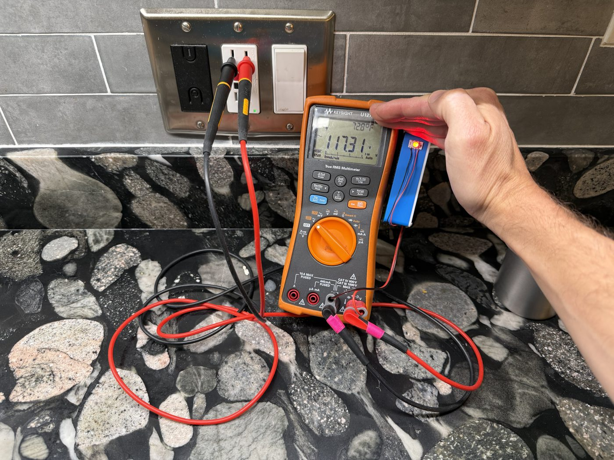
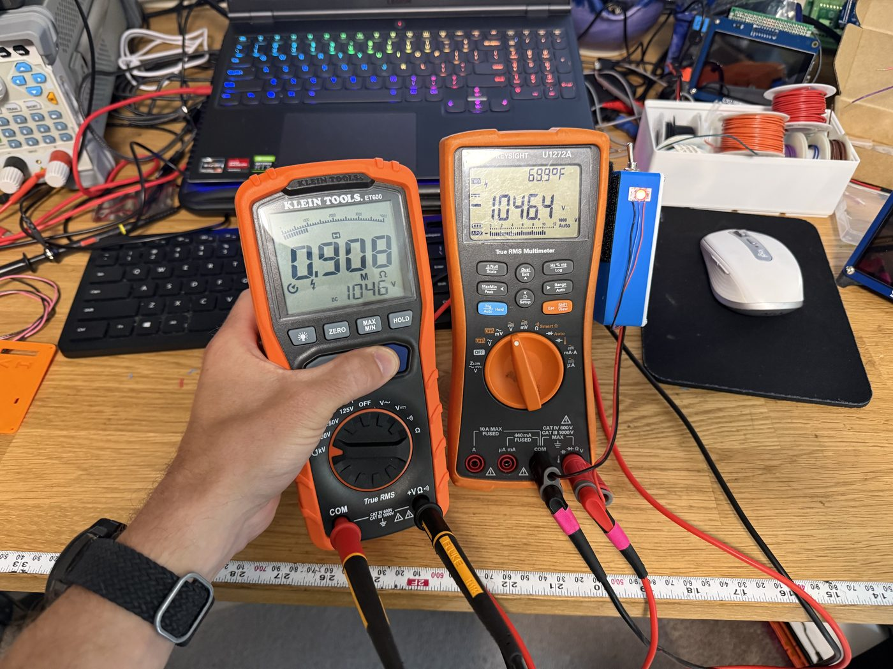
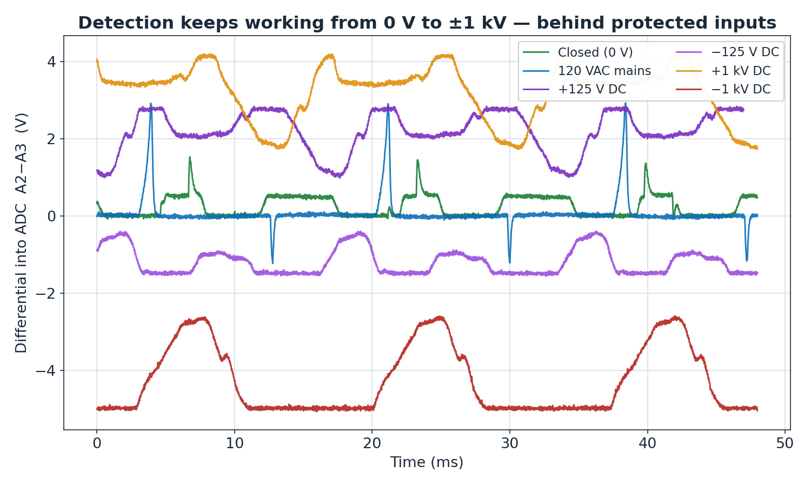
Some DMMs — or scripted bench meters — auto-switch to ohmmeter circuitry after a 0 V reading. That's just the user changing modes, automatically. The distinction here is fundamental, not incremental: it never leaves voltmeter mode at all.
| “Smart Mode” auto-switch | This design | |
|---|---|---|
| Speed | Pauses to switch modes | Continuity checked at 20 Hz (up to ~500 Hz) |
| Exposure | Can expose ohmmeter circuitry to live voltage | Never leaves voltmeter mode — nothing fragile exposed |
| Adoption | Buy a whole new DMM | Standalone — clip it onto the meter you already love |
Across the everyday things you probe, a normal meter gives you one ambiguous number. This gives you an answer.
| Probes separated by | Normal meter | This detector |
|---|---|---|
| Copper — same net | 0 V | “Leads Closed” |
| Air gap | 0 V | “Open Leads” |
| Open relay | 0 V | “Open Leads” |
| Diode (unenergized) | 0 V | Function of polarity / type |
| Transformer pri↔sec (unenergized) | 0 V | Rough impedance measurement * |
| GPIO pin, output low | 0 V | “Leads Closed” |
| GPIO pin, MCU off | 0 V | “Open Leads” |
| Energized impedance | Voltage | Voltage |
* Tuning the circuit to characterize transformer impedance is on the roadmap.
I have functional prototypes in multiple forms. What I need now is help turning them into a finished product: design, manufacturing, and getting it into the hands of people who'd use it. If you have feedback, advice, or want to help bring this to market, get in touch.